Magnetic Resonance Imaging T2 Relaxometry Calculator
Calculation of T2 in MR imaging using exponential decay:
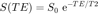
Contents
Important notice on nomenclature
This function is implemented on the basis of a mathematical equation. The coding convention is PEP8 (Python convention) with slight modifications to facilitate the understanding of mathematical arguments. As such, the notation ABC__X has been employed, where ABC is the name of the variables, and __X represents the variable name in the mathematical equation.
Requirements
This function requires stylishPlot.m to be available in order to plot the graph.
Inputs
echo_time__TE must be a vector of the echo times (TE), of type single or double.
mr_signal__S must be a vector of the magnetic resonance signals (S), of type single or double.
Outputs
response, which is an object of the class struct, containing:
response.T2_value which is the estimated T2 value.
response.S0_value which is the calculated S0 value.
response.fit_equation which contains the equation for the line of best fit.
response.plot_handle which is the handle to the graph.
function [ response ] = calcT2( echo_time__TE, mr_signal__S )
%CALCT2 Calculates the MR T2 Relaxometry value, and plots the data. % The function takes two vectors, and calculates the T2 relaxometry % value by estimating T2, and subsequently S0 by calculating the % exponential decay. % % Note: Precision of this function is limited to type |single| % capacity, even if the input vectors are passed as |double|. % % % REQUIRES: |stylishPlot.m| % % INPUT % ======================================================================= % echo_time__TE Vector of the echo times (TE), of type |single| or % |double|. % % mr_signal__S Vector of the magnetic resonance signals (S), of type % |single| or |double|. % % % RETURN % ======================================================================= % response Object of the class |struct|, containing: % |response.T2_value| estimated T2 value. % |response.S0_value| calculated S0 value. % |response.fit_equation| equation for the line of best fit. % |response.plot_handle| handle to the graph. % % %========================================================================== % author Pouria Hadjibagheri % last modified 5 Jan 2015 % matlab version MATLAB R2015b % Licence GPLv2.0 % Coding convention PEP8: https://www.python.org/dev/peps/pep-0008/ %========================================================================== %
Constants
These are held in the memory for as long as the programme is open. This is for added efficiency upon repeat calculations and optimisation.
persistent INDEX__S0; % Matrix index for S0. persistent INDEX__T2; % Matrix index for T2. persistent DECIMAL_PLACES; % Round values to |DECIMAL_PLACES|. persistent TIME_INIT; % Initial time = 0. persistent TIME_FINAL; % Maximum time displayed in the graph. persistent MIN_SIGNAL; % Minimum signal; signal is always >= 0. persistent MAX_SIGNAL_DISPLAY; % Maximum signal displayed in the graph. % If these conditions apply to one constant, they apply to all of them. % If either condition is true, the constants need to be initiated. if isempty(INDEX__S0) INDEX__S0 = uint8(1); INDEX__T2 = uint8(2); DECIMAL_PLACES = uint8(2); TIME_INIT = uint8(0); TIME_FINAL = uint8(150); MIN_SIGNAL = single(0); MAX_SIGNAL_DISPLAY = uint16(1500); end
Testing the inputs
Asserting the validity of the inputs by testing their types. All inputs must be vectors, and objects of the class signle or the class double.
try assert(isa(echo_time__TE, 'single') || isa(echo_time__TE, 'double'), class(echo_time__TE)); assert(isa(mr_signal__S , 'single') || isa(mr_signal__S , 'double'), class(mr_signal__S)); catch exception error(sprintf(['\n> Type Error\n\n'... 'Invalid input. The function expects two inputs as '... 'vectors, both of which must be of type |single| or ' ... '|double|.\nInstead, got arguments of type:\n %s\n%s'], ... exception.identifier, exception.message)); %#ok<SPERR> end
Calculations
Calculating 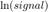.
log_mr_signal__S = single(log(mr_signal__S));
Storing the size of the data (applies to both signal and time).
echo_time_size = uint8(size(echo_time__TE));
For 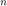 measurements of the MR signal 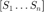 , corresponding to an number of 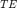 values 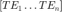 , it work out as:
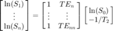
therefore:
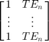
matrix__TE = single([... ones(echo_time_size); ... echo_time__TE ... ]);
As 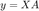; therefore
![$$
\left[ \matrix {
\textup{ln}(S_{0}) \cr
-1/T_{2} \cr
} \right]
= \frac{\textup{ln}(S)}{
\left[ \matrix {
1 & TE_{n} \cr
\vdots & \vdots \cr
1 & TE_{n} \cr
} \right]
} $$](calcT2_eq02482710962975657265.png)
matrix__S0__T2 = single(log_mr_signal__S / matrix__TE);
Initial signal intesity, :
init_signal__S0 = exp(matrix__S0__T2(INDEX__S0)); % Rounded to the specified numer of decimal places. % Round number incremented by 1 to account for changes. This is becase % There is no exact representation in floating point for decimal places, % except for 0.25, 0.50, and 0.75. This applies unless the number is not % complex or the floating points don't reach the maximum space in the memory. round__S0 = round(init_signal__S0, DECIMAL_PLACES+1);
Intrinsic 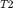
intrinsic__T2 = single(-1/matrix__S0__T2(INDEX__T2));
% Rounded to the specified number of decimal places.
round__T2 = single(round(intrinsic__T2, DECIMAL_PLACES));
Displaying the calculated value of T2 to the specified decimal places based on the estimations.
fprintf('\n T2 Relaxometry value: %0.2f \n\n', round__T2);
T2 Relaxometry value: 65.84
Regression
Calculating the line of best fit.
% Only takes objects of the class |double| as an input. [x_data__T, y_data__S] = prepareCurveData(double([0 echo_time__TE]), ... double([round__S0 mr_signal__S])... );
Exponential fit
Calculating a line of best fit through a non-linear least squares method.
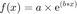
Setting up the fittype and its options.
fit_obj = fittype('exp1'); % Exponential equation with number of terms = 1.
Setting up the options for the fit object.
fit_options = fitoptions('Method', ... 'NonlinearLeastSquares'); % Non-linear least squares. fit_options.StartPoint = single([round__S0 0]); % Starting point of the fit. fit_options.Display = 'Off'; % To be plotted later.
Fitting the data and retrieving the equation.
[fit_equation, ~] = fit(x_data__T, y_data__S, fit_obj, fit_options);
Calculating data to plot the line of best fit.
% |linspace| only takes |single| or |double| as input. fit_x__te = single(linspace(MIN_SIGNAL, round__S0, round__S0)); % Using the equation to create data for the line of best fit. fit_y__s = fit_equation(fit_x__te);
Graph
Plotting the graph and setting the axes limits.
% Plotting a styled graph. stylishPlot(x_data__T, y_data__S, fit_x__te, fit_y__s, round__T2); % Plot axes limits. current_plot = gca; % Taking the current graph. current_plot.YLim = [MIN_SIGNAL MAX_SIGNAL_DISPLAY]; % Y-axis. current_plot.XLim = [TIME_INIT TIME_FINAL]; % X-axis.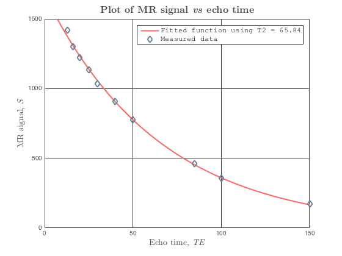
Output
Return args. See the intro for more info.
response = struct('T2_value', round__T2, ... 'S0_value', round__S0, ... 'fit_equation', fit_equation, ... 'plot_handle', current_plot);
end
ans =
T2_value: 65.84
S0_value: 1664.83
fit_equation: [1x1 cfit]
plot_handle: [1x1 Axes]